kembali ke awalnya
latihan sebelumnya
latihan berikutnya
kembali ke awalnya
latihan sebelumnya
latihan berikutnya
Latihan 4 dari 6
Pemurnian Protein - Suatu Proses Bertahap
Sudah jelas bahwa protein 2 tidak dapat dimurnikan dalam satu tahap baik melalui kromatografi filtrasi gel maupun kromatografi penukar ion. Secara sengaja campuran ini mengandung dua protein dengan berat molekul yang sama dan dua protein dengan titik isoelektrik yang sama. Namun, dengan memakai kedua metode ini secara berurutan, protein 2 dapat dimurnikan. Pada umumnya, pemakaian metode pemurnian berdasarkan ciri-ciri protein yang berbeda merupakan kunci untuk pemurnian protein.
Salah satu cara memurnikan protein 2 adalah sebagai berikut ini.
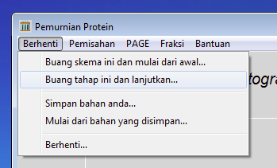
Jika anda belum melakukannya, klik pada kata Berhenti di baris abu-abu dan pilih Buang tahap ini dan lanjutkan.

Klik pada kata Pemisahan dan pilih Filtrasi Gel ...

Pilih Sephadex G-100 dan klik pada tombol OK.
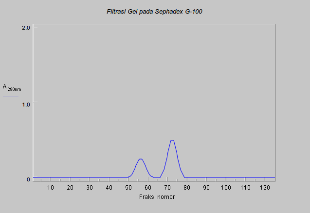
Anda akan mendapat profil elusi yang sama seperti profil yang pernah anda peroleh sebelumnya dengan bahan ini. Pada waktu itu, anda menentukan protein-protein yang terdapat dalam kedua puncak dengan elektroforesis gel poliakrilamida dua dimensi. Hal ini tidak biasa, elektroforesis gel poliakrilamida dua dimensi membutuhkan waktu yang lama untuk dilakukan. Metode itu tidak dipakai setiap kali untuk meneliti fraksi dari kromatografi kolom. Protein 2 adalah enzim, maka anda dapat menentukan fraksi yang mengandung protein tersebut melalui uji aktivitas enzim tersebut.
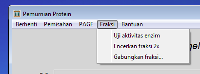
Mungkin anda sudah sadar bahwa sekarang pilihan di bawah kata Fraksi dapat dipilih. Pilih Uji aktivitas enzim.
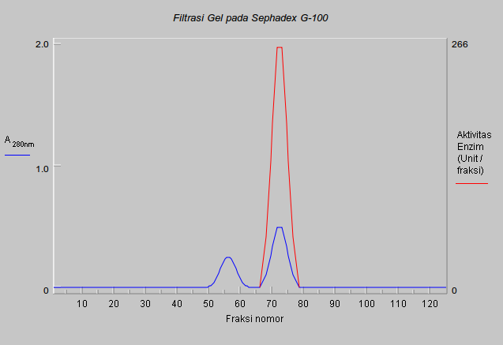
Semua aktivitas enzim (garis merah) terdapat dalam puncak kedua, tidak ada enzim dalam puncak pertama.
Anda harus gabung dan simpan fraksi-fraksi yang mengandung aktivitas enzim serta buang fraksi-fraksi yang lain.
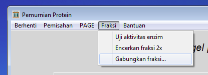
Klik pada kata Fraksi dan pilih Gabungkan fraksi ...
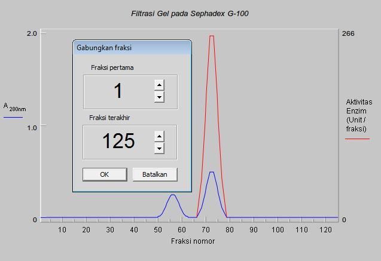
Sekarang anda harus menunjukkan fraksi yang akan digabung. Anda hanya ingin menyimpan puncak kedua.
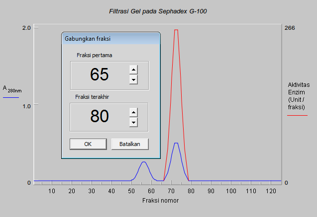
Ubah nomor fraksi pertama menjadi 65 dan fraksi terakhir menjadi 80 kemudian klik pada tombol Tampilkan. Luasnya fraksi yang akan digabung berbayang abu-abu. Anda dapat mengubah pilihannya sesuai keinginan anda dan anda akan memperoleh tampilan yang baru dengan meng-klik tombol Tampilkan. Jika tampilan tersebut telah sesuai dengan keinginan anda, klik pada tombol OK.
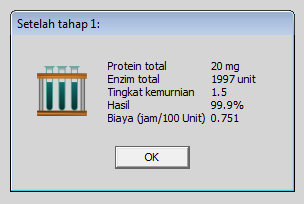
Dengan demikian tahap pertama dalam skema pemurnian sudah selesai. Pada saat ini akan mucul informasi mengenai proses pemurnian. Laporan lengkap yang mengandung informasi ini dapat diperoleh di antara pilihan di belakang kata Bantuan di baris abu-abu.
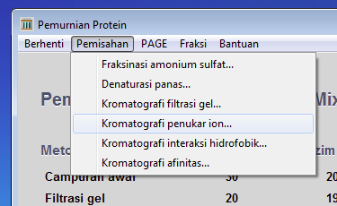
Anda sudah menentukan bahwa tidak akan ada perbedaan yang berarti terhadap pemurnian protein 2 jika menggunakan bahan (media) filtrasi gel yang berbeda-beda. Oleh karena itu, klik pada kata Pemisahan di baris abu-abu dan pilih Kromatografi Penukar Ion ... Jangan klik pada kata Berhenti, karena sekarang anda ingin melanjutkan pemurnian dengan fraksi-fraksi yang digabungkan pada tahap sebelumnya.

Pilih DEAE-cellulose dan gradien garam. Kemudian klik pada tombol OK.

Sebagaimana yang telah dilakukan sebelumnya, pilih nilai 7.0 untuk pH bufer dan kemudian klik pada tombol OK.

Sebagaimana yang telah dilakukan sebelumnya, masukkan nilai 0.0 molar untuk konsentrasi awal dan 0.5 molar untuk konsentrasi akhirnya.
Sekarang klik pada tombol OK.
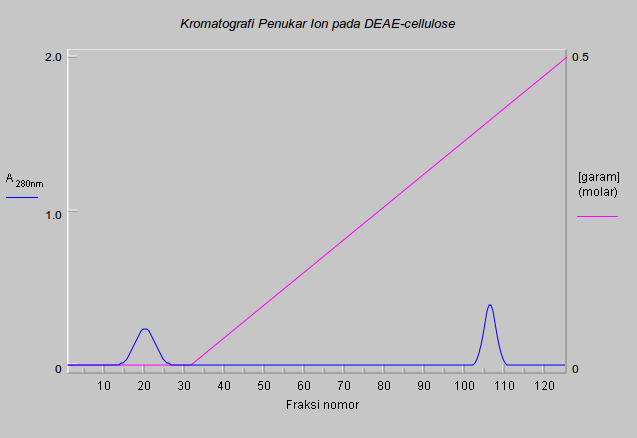
Inilah profil elusi yang seharusnya diperoleh. Apakah ada perbedan dibandingkan percobaan sebelumnya ketika campuran yang mengandung ketiga-tiga protein dipakai? Puncak manakah yang mengandung protein 2? Ujilah aktivitas enzim untuk mengetahuinya.
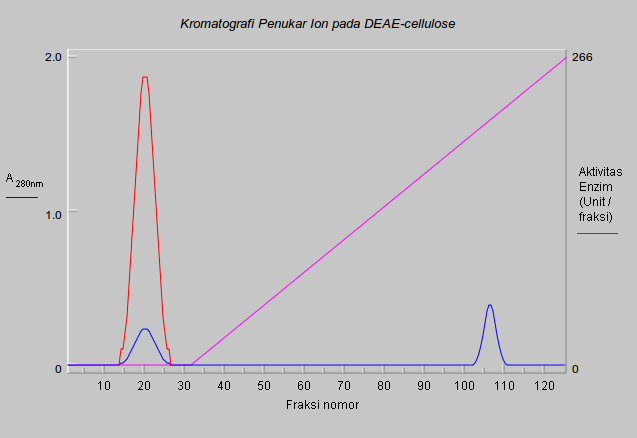
Gabungkan fraksi-fraksi yang mengandung aktivitas enzim. Protein 3 seharusnya dihilangkan pada tahap pertama (kromatografi filtrasi gel) dan protein 2 dipisahkan dari protein 1 pada tahap kedua (kromatografi penukar ion). Sehingga sampel anda seharusnya sudah murni. Sekarang periksa kemurniannya dengan elektroforesis 1D- dan 2D-.
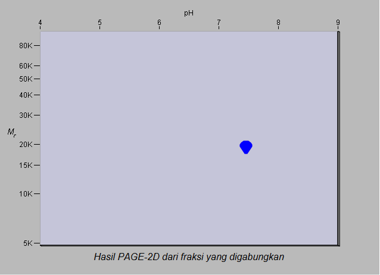
Baiklah, protein 2 sudah murni. Sekarang giliran anda. Klik pada kata Berhenti di baris abu-abu dan pilih Buang skema ini dan mulai dari awal. Pilih lagi campuran protein yang disebut Easy3_Mixture dan coba memurnikan protein 2 melalui skema dimana tahap pertama adalah kromatografi penukar ion dan tahap kedua adalah kromatografi filtrasi gel, yaitu kebalikan apa yang baru saja dikerjakan.
Setelah anda berhasil maka anda akan siap mencoba memurnikan suatu protein dari campuran lebih banyak protein.